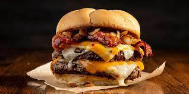

Meatloaf

Meatloaf is an American dish which consists of ground meat, often mixed with
other ingredients, as breadcrumbs and seasonings, molded in the shape of a loaf and baked.
New England Clam Chowder
New England Clam Chowder is an American milk or cream based thick soup or stew
made of clams, fish,
or vegetables, with potatoes, onions, & other ingredients and seasonings.
Buffalo Wings

Buffalo wings are an American dish which is deep-fried unbreaded chicken wings
or
drumsticks coated with a vinegar-and-cayenne-pepper hot sauce mixed with butter.
Barbecue Ribs

An American dish that is cooked using the low, indirect heat and smoke of a
barbecue pit or the
high, direct heat of a grill. Prior to cooking the ribs, a rub or marinade is often used to flavor and tenderize
the meat.
Apple Pie

Apple pie is an American fruit pie in which the principal filling ingredient is
apples. Apple pie is often served with whipped cream, ice cream, custard or cheddar
cheese.
Nachos

Nachos is an American dish which is a tortilla chip covered in multiple
different toppings such as melted cheese, hot peppers, ground beef, chicken, steak, guacamole, and sour cream.
Philly Cheese Steak

This is an American meal originally from philadelphia which is a sandwich made
with super thinly sliced ribeye steak, caramelized onion, and provolone cheese.
Hot Dogs

This is an American dish which is a whole sausage that is skinless in a sliced
bun. Usually topped with fried onions, tomato ketchup and mustard.
Cheeseburger

This is a hamburger which is topped with cheese in a seeded bun. Ususally
includes other toppings like, tomatoes, lettuce, onions, and bacon.